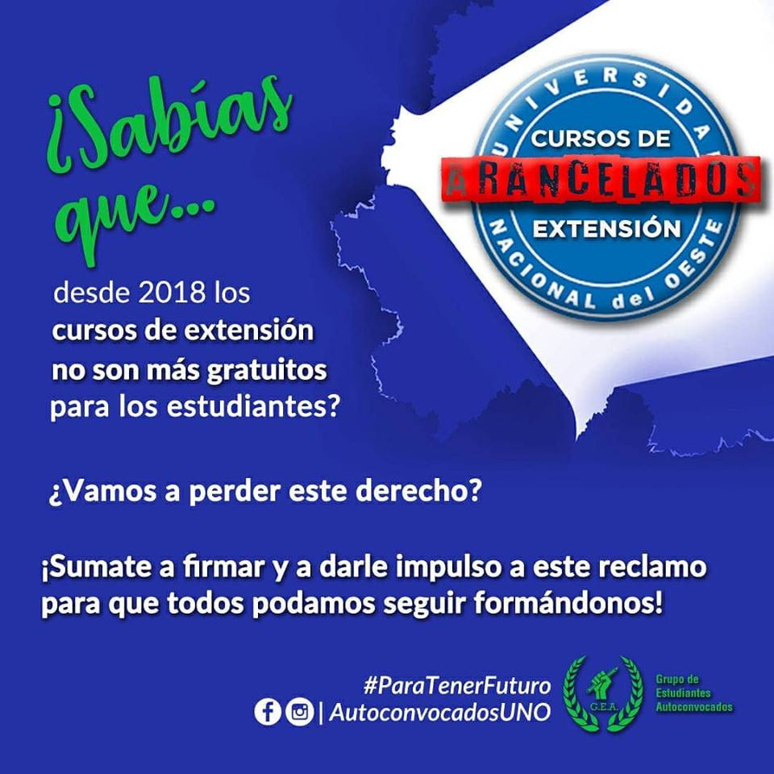
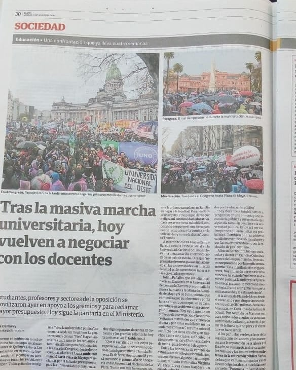
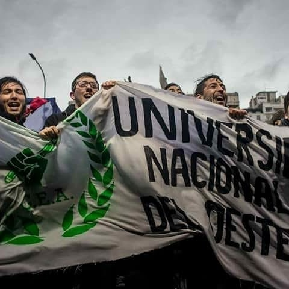
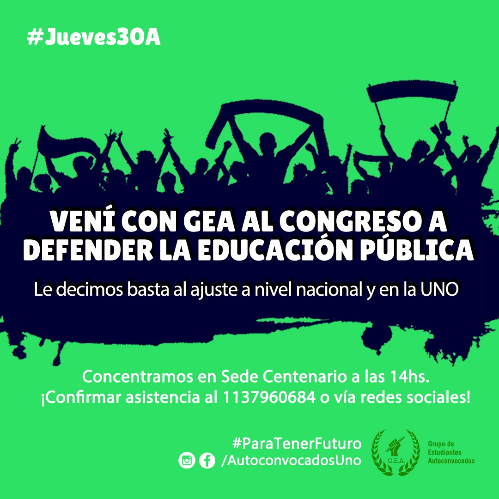
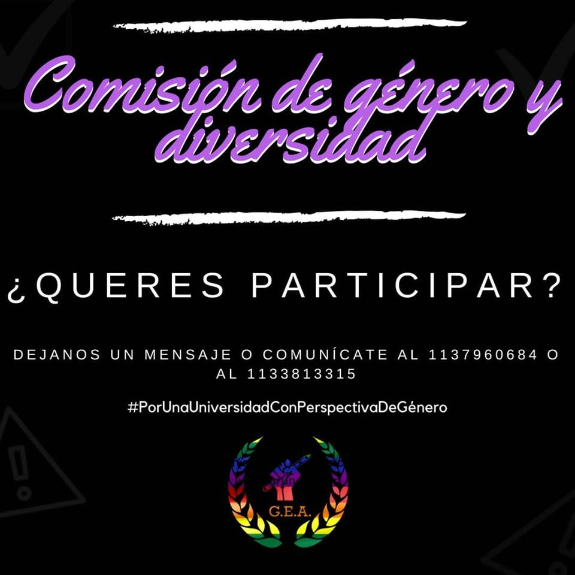

Grupo de Estudiantes Autoconvocados de la UNO
Desde 2016 defendiendo los derechos de todos. La Universidad que soñamos es posible.
De tu lado siempre

Desde 2016 defendiendo los derechos de todos. La Universidad que soñamos es posible.
De tu lado siempre
Seamos la voz del estudiantado.
G.E.A, siempre junto a vos.
Hoy, más que nunca.
A comienzos del 2018, con la asunción de Silvio Gastón Sotelo (Presidente en Licencia del Centro de Estudiantes y Consejero Superior por el Claustro Estudiantil) como máxima autoridad en la Secretaría de Extensión y la Secretaría de Bienestar Estudiantil, los cursos de extensión dejaron de ser gratuitos para los estudiantes; Inglés, por ejemplo, pasó a ser arancelado a partir del tercer nivel.
Al no haber ningun reclamo por parte de nuestros representantes frente a la perdida de este derecho desde GEA iniciamos una campaña llamada "No Arancelen Nuestros Derechos", que tiene como objeto lograr que los cursos sean gratuitos para todas y todos.
Ademas, cabe recordar que nuestro representantes estudiantiles votaron afirmativamente en el Consejo Superior. El ajuste no debe hacerse con los estudiantes. No queremos perder más derechos.
Sumate a darle fuerza al reclamo firmando en las mesitas de GEA, en todas las Sedes de la UNO.
Seamos la voz del estudiantado.
Diario Clarín de hoy, Página 30. Noticia Sobre la Marcha de ayer.
La UNO Presente de la mano de G.E.A
Nuestro espíritu de lucha retratado en el periódico con más influencia del país, la desconstrucción de los medios que ya no pueden tapar los reclamos de los estudiantes.
Sigamos luchando juntos, nosotros no vamos a bajar los brazos.
G.E.A, Siempre Junto a vos.
Al ritmo de este cántico estudiantes, docentes y no docentes, dijimos: "NO AL AJUSTE A LA EDUCACIÓN PÚBLICA"...
Queremos que se respeten nuestros derechos.
Queremos estudiar.
Queremos aprender.
Gracias a todos, y a cada uno de los compañeros y compañeras que participaron junto a nosotros.
Gracias por bancar esta lucha, por bancarse la lluvia, por gritar hasta quedarse sin voz, por aguantarse el frío. Gracias por todo.
Con estudiantes como estos, nadie nos para.
Varios medios nos tomaron de ejemplo y retrataron nuestra lucha. Acá te dejamos los links:
https://goo.gl/ukEJuQ https://goo.gl/faFLTR https://goo.gl/pzws8mG.E.A, Siempre Junto a vos.
Hoy, más que nunca.
Fuimos los primeros en levantar la bandera en Defensa de Educación Pública en la UNO, te contamos el Ajuste que hay a nivel nacional y también en la UNO y presentamos notas para que el Jueves no corran las faltas (Aunque se la adjudiquen otros)
¡Vení a Marchar con GEA, y contales a tus compañeros que salimos desde Sede Centenario a las 14hs!
G.E.A, Siempre Junto a vos.
Hoy, más que nunca.
MIENTRAS OTROS SE ADJUDICAN NUESTRAS INICIATIVAS... NOSOTROS: ¡SEGUIMOS ACTIVANDO!
En el día de hoy el compañero Alan presentó más de 15 hojas repletas de firmas. Donde se solicita la inmediata restitución de la máquina de café y gaseosas ya que estos productos aumentaron 90% para los estudiantes desde que las quitaron.
Esta iniciativa nació desde los estudiantes y se logró sin agotar instancias de interrupción de clases. Se juntaron adhesiones superando el 20% del padrón de estudiantes de Sede Centenario.
Esperamos que las autoridades tomen nota y accionen sobre este reclamo, y particularmente la "Secretaría de Bienestar Universitario", que debe garantizar facilidades a los estudiantes y no maximizar la ganancia de un privado.
#ElKioscoYLasMaquinasPuedenConvivir #MaquinasDeCaféYaG.E.A, Siempre Junto a vos.
Hoy, más que nunca.

El pasado miércoles 22 de Agosto, en Sede Centenario, se reunió por primera vez la Comisión de Género y Diversidad compuesta íntegramente por estudiantes de todas las Carreras de la U.N.O.
En la misma se debatieron algunos temas abocados a la problemática, ejemplificando a través de las experiencias que cada uno ha evidenciado en el transcurso de su paso por la Universidad y su relación con el entorno cultural en el que se encuentra.
Algunos temas que resultaron protagónicos del encuentro fueron:
- Nociones y Conceptos de Género y Diversidad.
- Discriminación. Tipos. Ejemplos en la U.N.O. Causas. Consecuencias. Accionar de las autoridades de la U.N.O. en distintos casos manifiestos.
- La Problemática del aborto clandestino. Sus características, situaciones, causas, consecuencias y cómo la comunidad universitaria lo visualiza a través de sus distintas carreras.
- Identificación de las Víctimas y Victimarios de Violencia de Género, Acoso o Hostigamiento Sexual. Cómplices. Acciones a tomar ex-Post
Conforme a los temas expuestos se decidió elaborar un Protocolo para Atención de la Violencia de Género, el Acoso Sexual y la Discriminación basada en Razones de Género y Orientación Sexual en la U.N.O. con el objeto de institucionalizar esta Comisión para evitar casos de vulnerabilidad en los que son expuestas y expuestos muchos de los estudiantes.
Es importante destacar que es la primera vez que se abre este tipo de debate en la U.N.O. y es de vital importancia que se visualice el reclamo de todas y todos, siendo que ninguno queda exento de estas características de la sociedad contemporánea.
Te invitamos a participar de los próximos debates a realizar para aportar tus ideas, comentarios y experiencias.
Un paso más hacia la inclusión.
G.E.A, Siempre Junto a vos.
Hoy, más que nunca.
